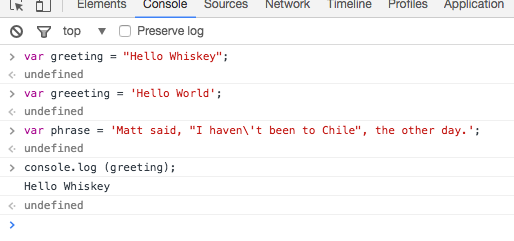
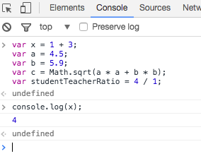
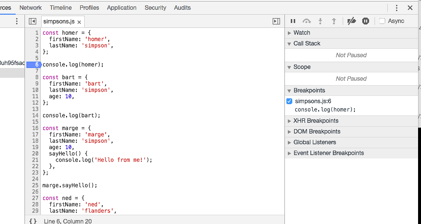
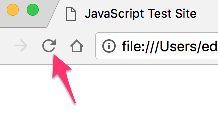

Objectives
Background & Tools, Variables & Boolean Logic
Background & Tools
- Show messages using
alertandconsole.log - Include a script in an HTML file
Variables
- Initialize and assign variables in JavaScript
- Store variables using the
promptfunction - Write comments in your JavaScript code
List all of the data types in JavaScript
Distinguish between variables defined using const, let and var
Boolean Logic
- Write conditional logic using boolean operators
- List all of the falsey values in JavaScript
- Use if/else and switch statements to include conditional logic in your JavaScript code
- Explain the difference between
==and===in JavaScript - Convert between data types explicitly in JavaScript
Objects
- Compare and contrast primitive data types with objects
- Be able to create an object consisting of multiple primitive types
- Compose a simple method inside an object.
Running Javascript
Option 1: Chrome Developer Console
For some of the short JavaScript examples, we will be using the Chrome console. To open up the console press Control + Shift + J on Windows and Linux (on a Mac Option + Command + j) . Another way to get to the console is to right click on the web page, select Inspect, and then move to the tab called Console.
Inside of this console you can write JavaScript! So let's start by alerting a message. In the Chrome Console, type the following:
alert("JavaScript is sweet!");Hit enter, and you should see a pop-up window with the message you typed inside of the alert. (Make sure that when you are writing commands in the Chrome console, you always press enter after you type your code; otherwise, the code won't run.) Try it again with a different message.
If you find those pop-ups annoying, you can also tell JavaScript to log a message directly to the console, using a function called console.log:
console.log("This is less obtrusive.");Once again, after you've written the JavaScript, press enter to execute your code. You should see this message logged in the console.
As you start typing more in the console, you will see it begins to fill up quickly. If you would like to clear the console you can either type in clear() and press enter or press the clear icon on the top left. If you would like see learn some more keyboard shortcuts with the chrome console, you can learn more about that here
Option 2: JavaScript and HTML in 2 Separate Files
The console is great for writing little bits of JavaScript. But if you need to write code that spans multiple lines, it can be a little annoying. You'll need to type shift + enter to get a line break in the console, since just hitting enter executes your code. This isn't too much trouble for code that's a few lines, but writing a lot of JavaScript in this way can quickly get tiring.
Another option is to keep your HTML and JavaScript in separate files. To do this, you still need to include a script tag in a HTML file, and this tag should link to a separate JavaScript file. Here's how you could do it:firstf
first.html
<!DOCTYPE html>
<html>
<head>
<title>JavaScript Test Site</title>
<script src="first.js"></script>
</head>
<body>
<p>Nothing going on yet.</p>
</body>
</html>In this case, we also need a file called first.js. So create this file, and inside of it write some JavaScript. Maybe it looks like this:
first.js
alert("Coming to you from first.js!");As before, the code should execute as soon as you open the HTML page in Chrome.
Exercises
Exercise 1. Create the html and javascript files shown in this step.
Variables
Fundamentals
What's a variable, and why would you ever want to use one? The word "variable" may be most familiar to you mathematics classes, when you often use letters like x or y to represent numbers.
This idea also exists in programming languages. Using variables lets us write code that's easier to read and also easier to change. It's unlikely you'll ever write a significant amount of JavaScript code without using variables, so it's good to get used to them early.
To see why variables are useful, suppose you want to log a set of greetings to the console:
console.log("Hi, Matt!");
console.log("How are you doing, Matt?");
console.log("See you later, Matt!");Paste the above into the console in Chrome.
This works fine, but what if we want to change the person's name from "Matt" to something else? We'll have to change three different spots in our text file, and there's a risk that we'll make a typo when fixing any one of these changes. Wouldn't it be better if we could just store a single copy of the name, and use it wherever we want?
Variables give us this ability. So let's write our first variable. In JavaScript, you can initialize variables using the var keyword. Try this:
var firstName = "Matt";
console.log("Hi, " + firstName + "!");
console.log("How are you doing, " + firstName + "?");
console.log("See you later, " + firstName + "!");If you enter this code correctly, you should see the same result as before - JavaScript knows that firstName corresponds to the name Matt!
There are a few different things going on here, so let's unpack the code a bit. On the first line, we're declaring a variable using the var keyword. A variable is just a way for us to save some data in JavaScript. When we typed in var firstName = "Matt", JavaScript stored the word Matt in the variable firstName. From then on, any time you use firstName in the console while this window is still open, you'll see the value that firstName has stored.
On the subsequent lines, you'll see there's something else going on too: we're using the + operator to combine words made up of characters, or strings, together. In JavaScript, when you combine two strings with the + operator, you get a new string which is a combination of the two. You can think of this as adding the strings together; a more formal name for it is concatenation. For example, if you write the expression "Hello" + " World" in the console, you should see that the result is the single string "Hello World".
Let's declare some more variables.
var firstName = "Matt";
var lastName = "Lane";
var fullName = firstName + " " + lastName;In all of these examples, we have the keyword var in front, followed by the variable name, an assignment operator (the = sign), and then the value we want to assign to our variable.
These examples also illustrate a common convention when writing JavaScript: when declaring variables using multiple words, the standard is to capitalize each word after the first word, and otherwise use lower-case letters (e.g. firstName, not firstname, first_name, FirstName, or some other variation). This casing convention is called camel case, and while your JavaScript code will work just fine if you don't abide by this convention, it's good to get in the habit of camel casing your variables.
The prompt function
Let's revisit our earlier example:
var firstName = "Matt";
console.log("Hi, " + firstName + "!");
console.log("How are you doing, " + firstName + "?");
console.log("See you later, " + firstName + "!");Since we've used a variable, if we want to change the name, now we only have to do it in one place. That's great! Try changing the value stored in firstName from "Matt" to your name.
Now suppose we wanted to ask the user for their name. In JavaScript, you can ask the user to provide some information using the prompt function. You won't use this function very often (there are better ways to get information from a user), but when you're first learning it's a helpful tool.
When you use the prompt function, a pop-up window will appear on the page and ask the user to fill in a text box. You can then store what the user types into a variable. Try it out with this modification to our example:
var firstName = prompt("What is your first name?");
// Now firstName should correspond to whatever the user typed!
console.log("Hi, " + firstName + "!");
console.log("How are you doing, " + firstName + "?");
console.log("See you later, " + firstName + "!");One last thing. See that line in there that starts with two slashes? That indicates a comment. Javascript ignores comments; they are there purely to make notes about the code and generally help with its readability. You can create single-line comments with //; if you want a multiline comment, here's a haiku that shows how it's done:
/* this is the start of
a multiline comment, and
this is the ending. */Exercises
Exercise 1: Variables
Create the following variables using the chrome console:
name, which is a string set to your current namedayOfBirth, which is a number set to the day of your birth month
Log these to the console.
Primitive Data Types
Most of the variables so far stored strings. But JavaScript can work with other types of data as well. Let's take a look at the primitive data types.
JavaScript has 6 primitive data types, but we'll only talk about 5 of them. Here's what they look like:
- string -
var greeting = "hello"; - number -
var favoriteNum = 33; - boolean -
var isAwesome = true; - undefined -
var foo;orvar setToUndefined = undefined; - null -
var empty = null;
JavaScript is known as a "weakly" typed language. What this means is that when you create variables and assign them to values, you do not have to specify the type of data you are working with. In statically (or strongly) typed languages, like Java and C++, you do need to specify the type.
Now let's look at data types a little more.
strings
As we saw above, a string is a set of characters enclosed in quotes. A string can be defined using double quotes:
var greeting = "Hello Whiskey";or using single quotes:
var greeeting = 'Hello World';So what is the difference between the two ways of initializing a string? Well, first of all, if you want quotes in your string, it's nice to have another option to start and end the string:
var phrase = 'Matt said, "I haven\'t been to Chile", the other day.';What would happen if you try to use double quotes to create the previous string instead of using single quotes? Try it in your console.
Also notice that there is a backslash before the single quote in haven't. The backslash is called an escape character and it tells JavaScript that the single quote in the string should not be used to end the string. Try removing the backslash from the string and see what happens in your JavaScript console.
Try declaring the above variables in the chrome, and then log then:

number
JavaScript numbers can be positive:
var num = 5;negative:
var num = -25;decimal numbers:
var piApproximation = 3.14159265;and we can also do all of the math expressions you'd expect:
var x = 1 + 3;
var a = 4.5;
var b = 5.9;
var c = Math.sqrt(a * a + b * b);
var studentTeacherRatio = 4 / 1;If you need to do any kind of calculation in the application you're building, chances are you'll be relying heavily on the number type.
Declare and output these variables in the console:

boolean
A boolean type can only be in one of two states, true or false. In other words:
var pizzaIsGood = true;var pizzaIsBad = false;Boolean types are a very useful tool for controlling our program. For example, if a user is signed in, you might want to show them a link to update their profile; but if a user is not logged in, you'd probably just want to show them a sign-in link. This sort of behavior, where the code that gets executed is conditioned on something else, happens all the time in programming. We'll learn more about how to deal with these situations in the next chapter.
undefined
Any variable that is created in JavaScript that is not assigned a value is undefined:
var noValue; // The value here will be undefinedYou can also explicitly set a variable to undefined:
var favoriteFood = "Candy";
// Changed your mind
var favoriteFood = undefined;null
Null is not the same as undefined. It signifies an intentional absense of data.
var secondEmailAddress = null;It is important to remember that null and undefined are different types in JavaScript. This can be a confusing feature of JavaScript, even for people who know other programming languages. The distinction can seem somewhat arbitrary when you're first learning the language, but as you get more comfortable the distinction will become clearer.
Figuring out a variable's type in JavaScript
In JavaScript, we have a keyword called typeof that returns the type of the variable. While this seems pretty fool-proof, there are some quirks that we should be aware of. In the Chrome console, let's type out each one of these:
typeof "";- "string"typeof 5;- "number"typeof false;- "boolean"typeof undefined;- "undefined"typeof null;// hmmm, this is not what we expect, it returns "object"!
Converting between types
Very often you'll need to convert a value from one type to another. For example, maybe you want to do some math on a couple of numbers, but you get the numbers from a form and they have a value of string. In some cases JavaScript will change types implicitly, in a process that's often referred to as (implicit) type coercion. We'll discuss the details of this later.
For now, though, let's take a look at some ways to explicitly change the type of a value. Here are a few examples:
Converting to a string: toString
The toString method will convert any value which is not undefined or null into a string. Here are a couple of examples:
var num = 5;
var bool = true;
num.toString(); // "5";
bool.toString(); // "true";Converting to a number
There are several ways you can convert a value to a number. One way is to parse the number, using parseInt or parseFloat: each function will look at a string from left to write and try to make sense of the characters it sees as numbers. Here are some examples:
parseInt("2"); // 2
parseFloat("2"); // 2
parseInt("3.14"); // 3
parseFloat("3.14"); // 3.14
parseInt("2.3alkweflakwe"); // 2
parseFloat("2.3alkweflakwe"); // 2.3
parseInt("w2.3alkweflakwe"); // NaN (not a number)
parseFloat("w2.3alkweflakwe"); // NaN (not a number)Exercise :
In the first.js file created in step 1, to do the following:
- Prompt the user for their favorite color
- Prompt the user fir their favorire number
Log these values to the console along with a friendly message.
Load first.html in chrome and keep an eye on the console to see that the message is being displayed.
Boolean Logic
Boolean Logic
An essential part of writing programs is being able to execute code that depends on certain conditions. There are many different examples when you'd want to conditionally execute code. Here are just a few:
- You want the navigation bar on your website to look different based on whether or not someone is logged in
- If someone enters their password incorrectly, you want to let them know; otherwise, you want to log them in
- You're building a tic-tac-toe game, and want to know whether it's X's turn or O's turn
- You're building a social network and want to keep person A from seeing person B's profile unless the two of them are friends
It's very hard to write any kind of interesting software without making use of conditionals and boolean logic. To do so, we'll make use of booleans (true and false), along with if statements and switch statements.
An if statement looks something like this:
var instructor = "Elie";
// we begin with an "if" statement followed by a condition in () and a block of code inside of {}
if (instructor === "Elie") {
console.log("Yes!");
} else {
console.log("No");
}Try this (using copy/paste from above):
Notice that we used a === instead of =. Anytime that we use more than one equals operator (we can either use == or ===) we are doing a comparison (comparing values). When we use a single equals operator =, we are doing what is called assignment (setting a variable equal to some value).
This first example might appear a little strange, because the condition inside of the if statement (instructor === "Elie") will always return true! Here's another example for you to consider.
Run this code a couple of times and try to get both messages to log to the console based on what you enter into the prompt:
var favoriteFood = prompt("What's your favorite food?");
if(favoriteFood === "pizza") {
console.log("Woah! My favorite food is pizza too!");
} else {
console.log("That's cool. My favorite food is pizza.");
}Now, what's the difference between == and ===, you ask? We'll get to that down below. For now, though, it might be helpful to play around with these operators in the Chrome console, and see if you can come up with a guess as to how these operators behave differently.
var number = 55;
// we begin with an "if" statement followed by a condition in () and a block of code inside of {}
if(number == "55") {
console.log("Yes!");
} else {
console.log("No");
}Paste the above code into the console - the first time using == in the comparison, the second time using ===. Observe the output carefully.
Difference between == and ===
In JavaScript we have two different operators for comparison: the double and triple equals. Both operators check whether the two things being compared have the same value, but there's one important difference. == allows for type coercion of the values, while === does not. So to understand the difference between these operators, we first need to understand what is meant by type coercion.
Consider the following examples:
// 1.
5 + "hi"; // "5hi"
// 2.
if ("foo") {
console.log("this will show up!");
}
// 3.
if (null) {
console.log("this won't show up!");
}
// 4.
+"304"; // 304Let's figure out what's happening in each of these examples. In the first one, you've asked JavaScript to add a number and a string. In a lot of programming languages, this would throw an error, but JavaScript is more accomodating. It evaluates the expression 5 + "hi" by first coercing 5 into a string, and then interpreting the "+" operator as string concatenation. So it combines the string "5" with the string "hi" into the string "5hi".
The next two examples show a similar sort of coercion. JavaScript expects the values inside of parentheses that come after the keyword if to be booleans. If you pass in a value which is not a boolean, JavaScript will coerce the value to a boolean according to the rules for truthy/falsey values defined on the next step. Since "foo" is not a falsey value, it will be coerced to true, which is why the second example logs something to the console. null, however, is a falsey value, so it gets coerced to false and nothing shows up in the third example.
The last example shows a very common way to coerce a stringified number back into a number. By prefacing the string with the plus sign, JavaScript will perform a coercion on the value and convert it from a string value to a number value.
In essence, then, coercion is just the process of converting a value from one type to another. JavaScript uses coercion pretty liberally among programming languages, so if you don't understand how coercion in JavaScript works, it can be easy to introduce bugs into your code.
But what does all of this have to do with == and ===? Let's look at some examples:
5 == "5"; // true
5 === "5"; // false
"true" === true; // false
"true" == true; // false
true == 1; // true
true === 1; // false
undefined === null; // false
undefined == null; // trueWhat's going on here? Let's deal with the expressions involving === first. As you can see, the expressions 5 === "5", "true" === true, true === 1, and undefined === null all evaluate to false. In some sense, perhaps this shouldn't be so surprising: none of the values being compared are the same! One way to think about this is to recall the types of the primitives being compared. In the first case, we're comparing a number to a string; in the second case, a boolean and a string; in the third case, a boolean and a number; and in the last case, undefined and null. How can these values be the same when the primitives involved aren't even of the same type??
From the above examples, you can see that the == operator is a little less strict (in fact, === is sometimes referred to as the "strict" equality operator, while == is sometimes referred to as the "loose" equality operator). The reason that comparisons like 5 == "5" evaluate to true is because == allows for type coercion!
But what gets coerced? Does 5 become "5" or does "5" become 5? In this case, according to the specification the string gets coerced into a number, not the other way around. This might seem like an unimportant detail, but there are a couple of gotchas in the way coercion works that can be confusing when you first encounter them.
For example, it might seem like "true" == true should evaluate to true, since "true" is a truthy value! But in fact, what actually happens is that the boolean true gets coerced to a number (1), and then "true" is compared to 1, which returns false. (This is also why true == 1 evaluates to true.)
It's less important to memorize these rules for how coercion works with == than to recognize that == allows for coercion while === doesn't. If you don't want to have to think about coercion in your comparisons, stick to ===.
If Else
If / else statements with other comparators
We previously saw what an if statement looks like. Let's examine this a bit more:
var x = 4;
if(x <= 5){
console.log("x is less than or equal to five!");
} else {
console.log("x is not less than or equal to five!");
}We saw before that we can use == or === to compare values. We can also check for inequality, using
< - less than,
<= - less than or equal to,
> - greater than,
>= - greater than or equal to,
!= - not equal (loose), and
!== - not equal (strict).
Falsey Values
As we've alluded to already, another essential concept to understand in JavaScript is that some values (aside from false) are actually false as well, when they're used in a context where JavaScript expects a boolean value! Even if they do not have a "value" of false, these values will be translated (or "coerced") to false when evaluated in a boolean expression.
In JavaScript there are 6 falsey values:
0""nullundefinedfalseNaN(short for not a number)
If you ever want to determine if a value is truthy or falsey, you can prefix it with !!. By using !! it explicitly coerces a value into its boolean form.
What do these values return? Try them out in the Chrome console now:
!!false!!-1!!-567!![]!!{}!!""!!null
You can read more about these here
!, || and &&
In our conditions (and assignments) we can use certain logical operators to write more complex statements. Here are some other useful operators:
! - the not operator, which flips the boolean value (!true === false). !! simply applies this operator twice, so !!true === true, and !!false === false.
|| - the or operator, which in a boolean context returns true if either condition is true
&& - the and operator, which in a boolean context returns true if both conditions are true
You can read more about logical operators here.
If / else if / else
Sometimes you may have more than two conditions to check. In this case, you can chain together multiple conditions using else if. Here's an example:
var number = prompt("What's your favorite number?");
if (number >= 1000) {
console.log("Woah, that's a big number!");
} else if (number >= 0) {
console.log("That's a cool number.");
} else {
console.log("Negative numbers?! That's just bananas.");
}Try this out with a few different numbers and see what happens.
Switch statements
Another way to write conditional logic is to use a switch statement. While these are used less frequently, they can be quite useful when there are multiple conditions that can be met. Notice that each case clause needs to end with a break so that we exit the switch statement. Here is an example:
var feeling = prompt("How are you feeling today?").toLowerCase();
// what do you think the .toLowerCase does at the end?
switch(feeling){
case "happy":
console.log("Awesome, I'm feeling happy too!");
break;
case "sad":
console.log("That's too bad, I hope you feel better soon.");
break;
case "hungry":
console.log("Me too, let's go eat some pizza!");
break;
default:
console.log("I see. Thanks for sharing!");
}Exercises
Exercise 1: Boolean Expressions
Write down what the following statements will return. Enter them in the console to verify your answers.
2 == "2";2 === 2;true && false;false || true;true || false;
Exercise 2: If Statement
Answer the following questions about this code block:
var isLearning = true;
if (isLearning) {
console.log("Keep it up!");
} else {
console.log("Pretty sure you are learning....");
}- What should the above code console.log?
- Why do we not need to specify
if(isLearning === true)? Why doesif(isLearning)work on its own?
Test the fragment in the chrome developer console.
Const, Let & Simple Objects
Const & Let
The variable statement declares a variable, optionally initializing it to a value.
var
// String
var greeting = “hello";
// Number
var favoriteNum = 33;const
The const statement is similar to the var statement, however, the value cannot be redeclared or reassigned.
// String
const greeting = 'hello';
// Number
const favoriteNum = 33;So if we try this:
favoriteNum = 23;We will get an error. Try the above in the chrome console now and see what happens. You should see something like this:
let
We can also use let:
let anotherFavourite = 33;
anotherFavourite = 32;This is similar to var, in that it introduces a variable that can be reassigned later. It has other benefits we will explore in subsequent lessons.
In our applications, we will always use const or let, and avoid using var.
Simple Objects
Whereas primitive data typed variables hold individual values. e.g:
- numbers
- strings
- boolean
Object types can hold more than one value. e.g.:
- a number AND a string.
- 2 numbers and a boolean and a string
- 3 strings and 2 numbers
Objects are central to creating interesting and powerful programs.
Try this on the console (remember to use Shift and Enter to go onto a new line for entering multiple lines of code:
const homer = {
firstName: 'homer',
lastName: 'simpson',
};Then try this:
console.log(homer);This will look like this:
Try this object:
const bart = {
firstName: 'bart',
lastName: 'simpson',
age: 10,
};
console.log(bart);We have now created 2 objects. We can print the two of them again:
console.log ('Bart = ' + bart);
console.log ('homer = ' + homer);We can also print out individual attributes:
console.log ('Barts age =', bart.age);Exercises
For these exercises, create:
simpsons.html
<!DOCTYPE html>
<html>
<head>
<title>JavaScript Test Site</title>
<script src="simpsons.js"></script>
</head>
<body>
<p>Nothing going on yet.</p>
</body>
</html>simpsons.js
// JS Code hereAnd use the developer tools in chrome to run and monitor the script.
Exercise 1: Maggie
In simpsons.js, Create an object called maggie, with Maggies details (say her age is 2). Log the object to the console. Load simpsons.html and make sure maggies details appear on the console.
Exercise 2: Lisa
Create an object called lisa, with Lisa's details (say her age is 12). In addition, store her favourite musical instrument. Log the object to the console.
Objects with Functions
Try this object in the console:
const marge = {
firstName: 'marge',
lastName: 'simpson',
age: 10,
sayHello() {
console.log('Hello from me!');
}
};This has different type of attribute - a function:
sayHello() {
console.log('Hello from me!');
}We can log the object as before:
console.log(marge);We can also call the function we have just defined:
marge.sayHello();Your console might look like this:
this
Try this new object in the console:
const ned = {
firstName: 'ned',
lastName: 'flanders',
age: 45,
speak() {
console.log('How diddley do? says ' + this.firstName);
}
}
ned.speak();Note the difference in the function:
speak() {
console.log('How diddley do?' + this.firstName);
}Here we are using this to access the firstName attribute of the ned object.
Exercises
Use simpsons.js (not the console) for this exercise.
Exercise 1: Objects with Functions
Create another Simpsons character of your choice. Include a hello() function, and have the function say something relevant to the character. Also include a goodby() function which says something else. Once you have created the objects, call them functions a few times.
Chrome Debugger
Use this copy of the simpsons.js file (copy/paste in, replacing your content:
simpsons.js
const homer = {
firstName: 'homer',
lastName: 'simpson',
};
console.log(homer);
const bart = {
firstName: 'bart',
lastName: 'simpson',
age: 10,
};
console.log(bart);
const marge = {
firstName: 'marge',
lastName: 'simpson',
age: 10,
sayHello() {
console.log('Hello from me!');
},
};
marge.sayHello();
const ned = {
firstName: 'ned',
lastName: 'flanders',
age: 45,
speak() {
console.log('How diddley do? says ' + this.firstName);
},
};
ned.speak();In chrome, open simpsons.html again now - and also open developer tools:
Select the Sources tab, and then select simpsons.js:
Now, double click in the margin on line 6 - so that a blue arrow appears:

Reload the page (press the reload button in the browser tool bar)

... and look carefully at the view now presented:
Notice that the object homer has appeared on the right panel above.
Now try the following - press the Step over.. button indicated below:
This will move the blue indicator on in the script:

Press this Step over button again a few times. Monitor the changes in the right hand panel as you do this.
Reload the page again - step through the script line by line, carefully looking at the right hand pane,.
Exercise
Experiment with creating and removing the blue indicators in the margin:
These are called breakpoints, and they allow you to stop the program at the point indicated. You can remove a breakpoint by double clicking in the margin.
Try to understand what happens when you press the reload button on the browser. Also, explore the right hand pane in the developer tools console
Exercises
Exercise 1:
Using the simpsons.html and simpsons.js files from the last step as a guide, create a new pair of files called exercise-01.html and exercise-01.js. Make sure exercise-01.html loads exercise-01.js.
In exercise-01.js, write a function that reads a firstname, lastname and age using the prompt function, create and object called user that contains these values, and then logs that object to the console.
Hint: This is how you prompt the user for a string:
const usersFirstName = prompt('enter first name');And this is how you might store the string in an object:
const user = {
firstName: usersFirstName,
};Exercise 2:
Extend the program to also ask also for a greeting. Extend the object so that it has a member function 'sayHello' that, when called, prints the greeting to the console, including the name of the user.
Exercise 3:
Challenging!
Write a script that will read two values using prompt()
- the name of a song
- the artist who composed it
Put these two values in an object called favourite. Also, in this object introduce a function called print(), which will print the song details to the console.
Eg - it might print
My favorite song is Moonlight Sonata by BeethovenIf the values 'Moonlight Sonata' and "Beethoven" had been entered.
The solutions are here. Try not to look at them until you have had a good go at the exercises first.
Exercise 4:
Also Challenging!
Answer the following questions about this code block:
var firstVariable;
var secondVariable = "";
var thirdVariable = 1;
var secretMessage = "Shh!";
if(firstVariable){
console.log("first");
} else if(firstVariable || secondVariable){
console.log("second");
} else if(firstVariable || thirdVariable){
console.log("third");
} else {
console.log("fourth");
}- What should the above code console.log? Why?
- What is the value of
firstVariablewhen it is created? - Is the value of firstVariable a "truthy" value? Why?
- Is the value of secondVariable a "truthy" value? Why?
- Is the value of thirdVariable a "truthy" value? Why?
Run the script - in the console or in first.js - to see if your answers are correct.